OpenFlexure
View pane
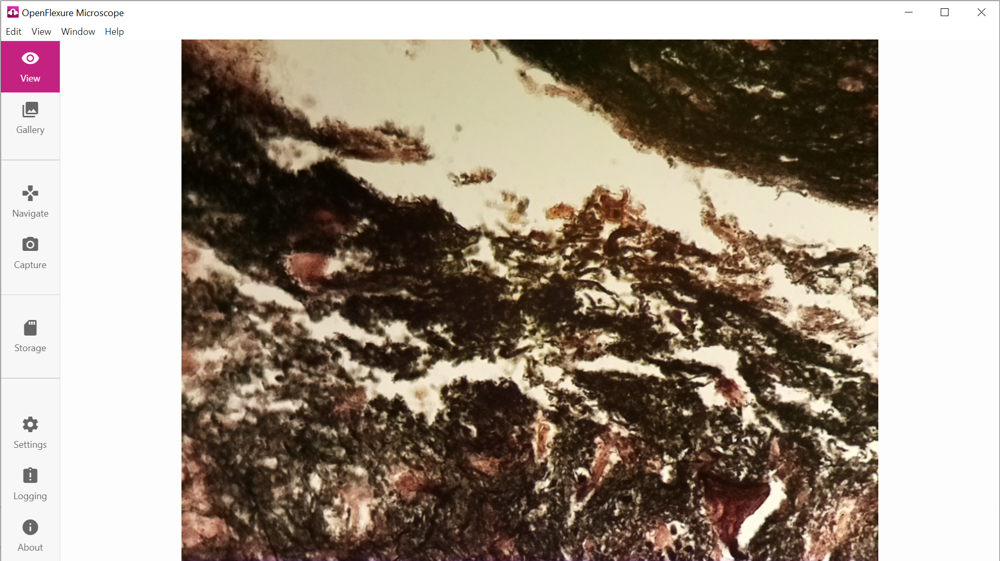
Observe the quiet default view.
Study: Decide what can disappear during simple observation.
Source and version
Documentation revision ac454237
Retrieved 18 October 2026.
Open Microscope Motorization · Design research · 18 October 2026
Start with OpenFlexure for structure, Nikon LE for a clean everyday view, and SharpCap for camera controls. Use the other references to solve specific workflow problems.
17 visual references across 8 applications. Images are stored locally; select an image to inspect its full resolution. Observations describe the pictured interface. Study prompts are proposals for this project. Versions and small crops are identified under each image.
17 references
OpenFlexure

Observe the quiet default view.
Study: Decide what can disappear during simple observation.
Documentation revision ac454237
Retrieved 18 October 2026.
OpenFlexure
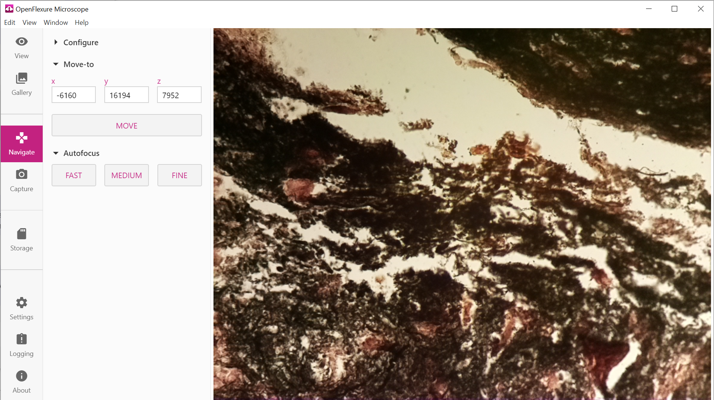
Navigation controls occupy one added column.
Study: Keep routine movement separate from hardware configuration.
Documentation revision ac454237
Retrieved 18 October 2026.
Nikon NIS-Elements LE
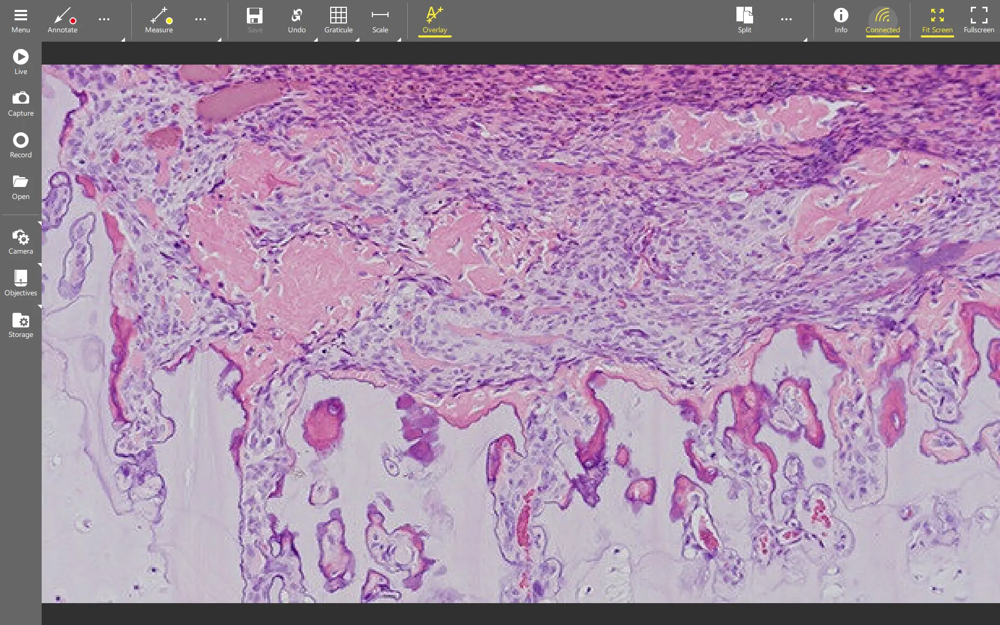
The image dominates beneath short action labels.
Study: Use this as a reference for the everyday Live view.
Version not stated on source
Published on NIS-Elements LE page. Some reused assets have NIS-L filenames; exact pictured build unconfirmed.
Retrieved 18 October 2026.
Nikon NIS-Elements LE
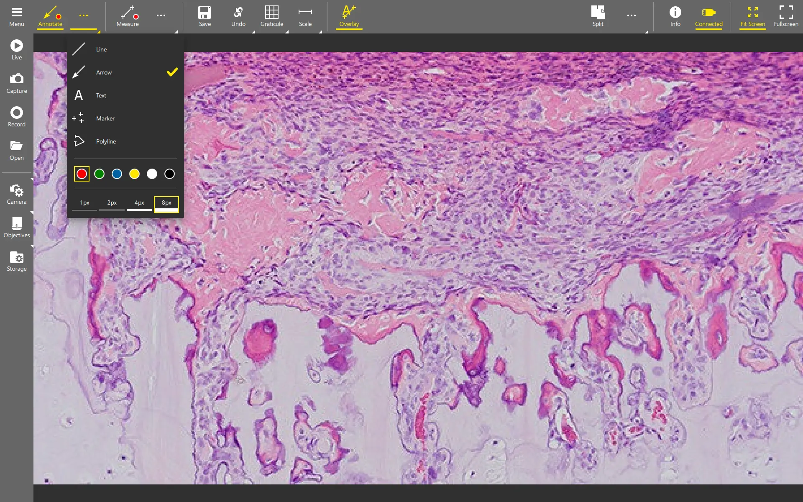
A contextual palette exposes drawing options.
Study: Show options for the selected tool together.
Version not stated on source
Published on NIS-Elements LE page. Some reused assets have NIS-L filenames; exact pictured build unconfirmed.
Retrieved 18 October 2026.
SharpCap
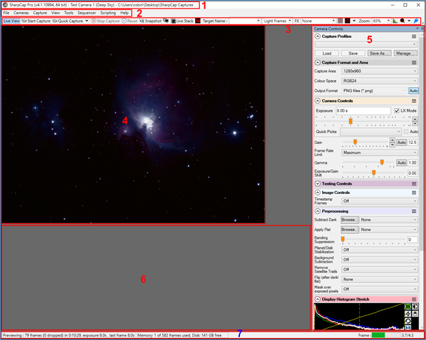
The publisher numbers the main interface regions.
Study: Use this as a layout diagram; small labels have limited detail.
SharpCap 4.1 manual; screenshot title shows Pro 4.1.10994, 64 bit
Retrieved 18 October 2026.
Evident cellSens
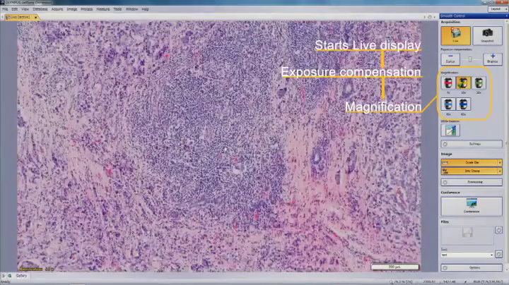
A narrow control panel accompanies a large specimen image.
Study: Keep default controls limited to the immediate workflow.
Legacy Olympus-branded demonstration; exact application build unconfirmed
Frame extracted at 00:25.000 using FFmpeg. Publisher explanatory labels retained. Source video is 720 × 404, duration 49.551 seconds.
Retrieved 18 October 2026.
ZEISS ZEN
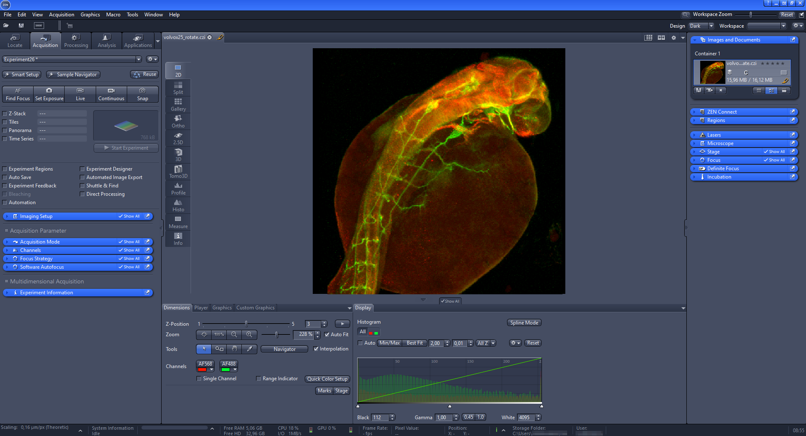
Task tabs and collapsible groups surround the image.
Study: Borrow the grouping while reducing the default density.
ZEN knowledge base; screenshot build unconfirmed
Original embedded PNG extracted from the User interface figure; surrounding SVG callout numbers are not part of this PNG.
Retrieved 18 October 2026.
Official source page · PNG embedded in source page · Local image
Leica LAS X
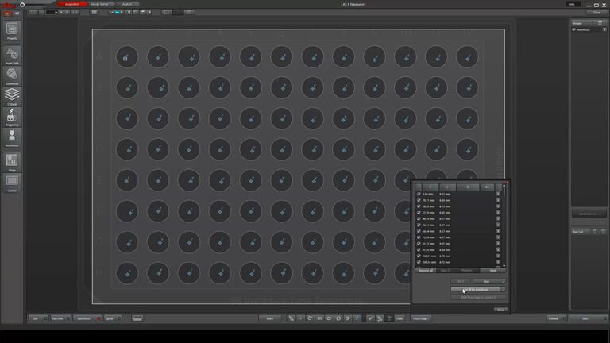
Spatial markers and a point list share the view.
Study: Connect scan geometry and focused points.
Version not stated on source
Retrieved 18 October 2026.
Micro-Manager
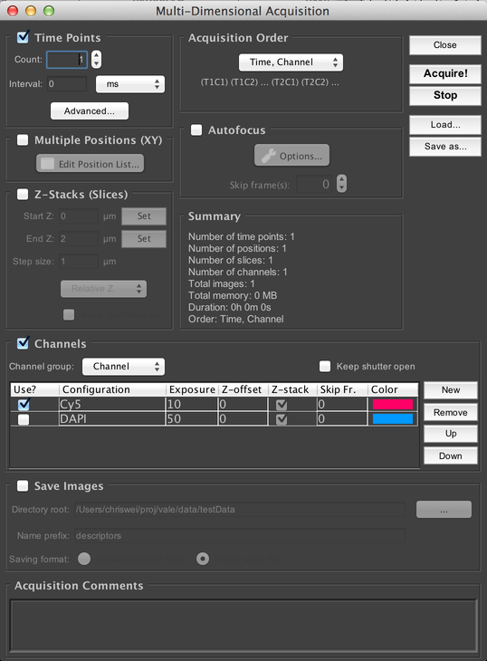
Acquisition dimensions have separate groups and a summary.
Study: Summarize a scan before starting it.
2.0 guide; main screenshot title shows 2.0.x dev and a 20160209 path; demo configuration
Retrieved 18 October 2026.
Micro-Manager
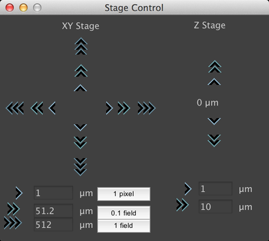
XY and Z have separate controls and increments.
Study: Separate step distance from movement speed.
2.0 guide; main screenshot title shows 2.0.x dev and a 20160209 path; demo configuration
Retrieved 18 October 2026.
Micro-Manager
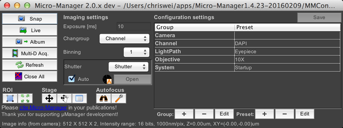
Snap and Live sit beside imaging settings.
Study: Keep common capture actions immediately available.
2.0 guide; main screenshot title shows 2.0.x dev and a 20160209 path; demo configuration
Retrieved 18 October 2026.
OBS Studio
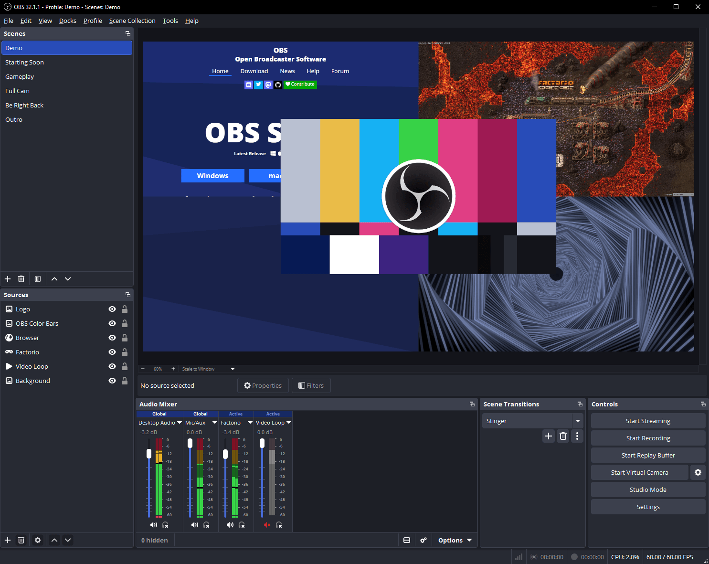
Preview, sources, recording controls, and status have separate regions.
Study: Keep task state visible when settings close.
OBS 32.1.1 visible in screenshot title bar
Retrieved 18 October 2026.
OBS Studio
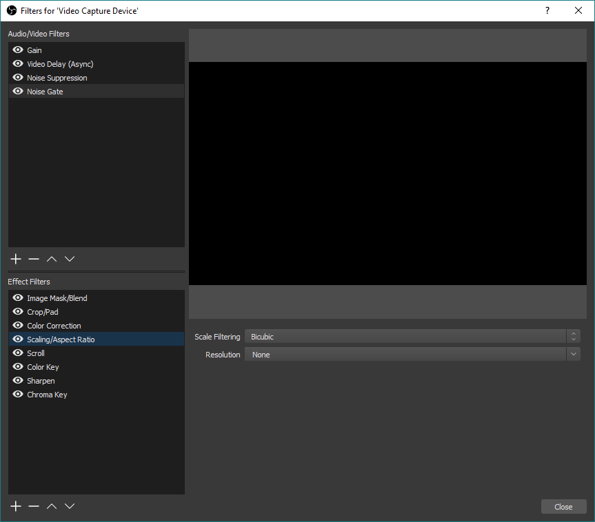
Effect visibility and removal have separate controls.
Study: Give bypass, reset, and removal distinct behavior.
Legacy screenshot in OBS overview guide dated 2021-08-25
Image hosted on Imgur and linked by the official OBS guide.
Retrieved 18 October 2026.
Evident cellSens
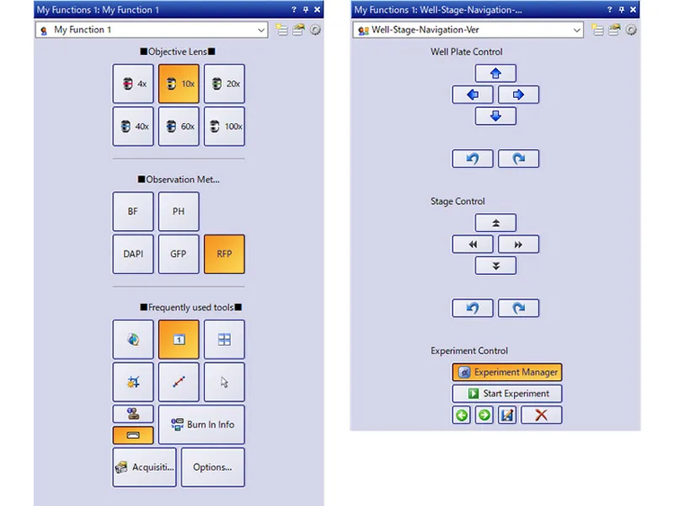
Two customized My Functions panels are pictured.
Study: Customization still needs consistent component rules.
Version not stated on source
Official product-page image, requested at 2000px; actual dimensions recorded below.
Retrieved 18 October 2026.
Evident cellSens
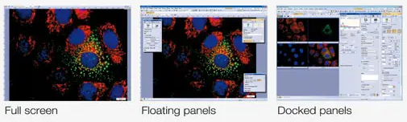
A small comparison illustrates three window arrangements.
Study: Specify a useful default before supporting optional layouts.
Version not stated on source
Official product-page image, requested at 2000px; actual dimensions recorded below.
Retrieved 18 October 2026.
Evident cellSens
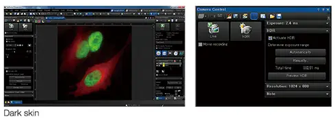
A low-resolution composite illustrates dark UI surfaces.
Study: Study visual hierarchy rather than individual text labels.
Version not stated on source
Official product-page image, requested at 2000px; actual dimensions recorded below.
Retrieved 18 October 2026.
Nikon NIS-Elements LE
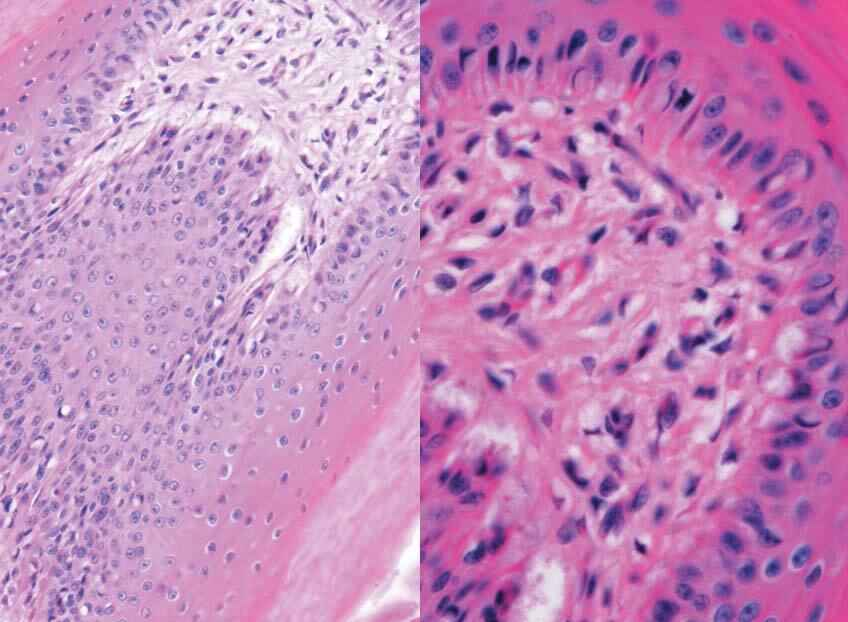
Specimen comparison crop; no interface controls are pictured.
Study: Use for comparison intent, not layout reconstruction.
Version not stated on source
Published on NIS-Elements LE page. Some reused assets have NIS-L filenames; exact pictured build unconfirmed.
Retrieved 18 October 2026.
No matching references. Reset the filters or try a broader term.